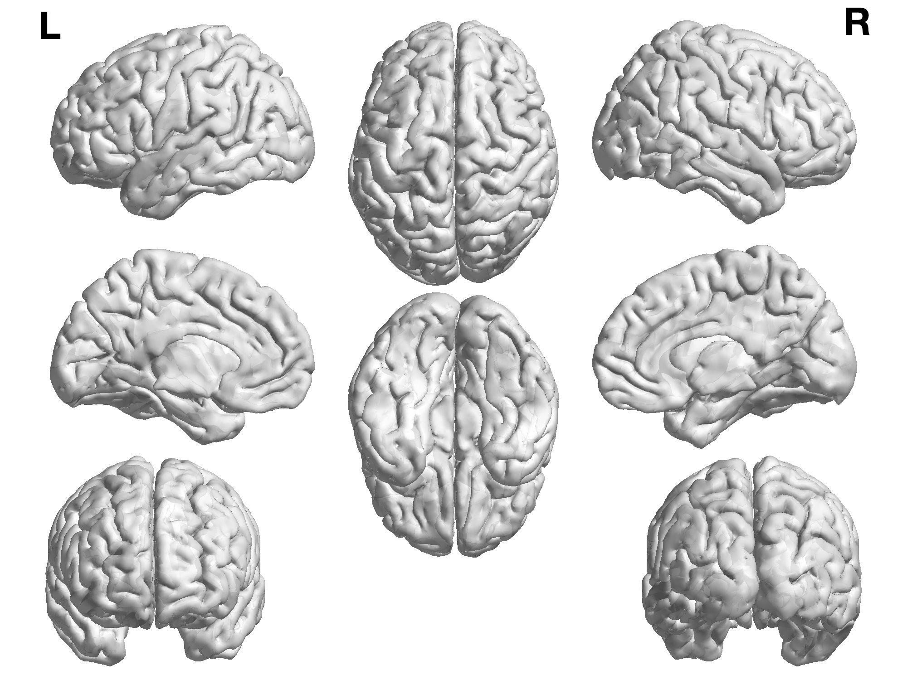

Brain connections of human white matter with diffusion tractography

AAL3 region:
Left Superior frontal gyrus(medial orbital)
Left Gyrus rectus
Left Medial orbital gyrus
Left Anterior orbital gyrus
Left Posterior orbital gyrus
Left Lateral orbital gyrus
Left IFG pars orbitalis 2
Left Inferior frontal gyrus(opercular part)
Left Inferior frontal gyrus(triangular part)
Right Superior frontal gyrus(medial orbital)
Right Gyrus rectus
Right Medial orbital gyrus
Right Anterior orbital gyrus
Right Posterior orbital gyrus
Right Lateral orbital gyrus
Right IFG pars orbitalis 2
Right Inferior frontal gyrus(opercular part)
Right Inferior frontal gyrus(triangular part)
Normalized streamline number (mean)
1
0.8
0.6
0.4
0.2
0
Hemispheres
Left
Right
*excluding supramarginal and angular gyri